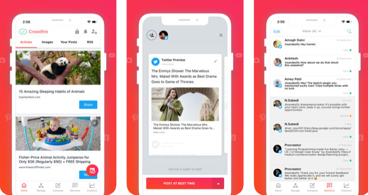

Instagram est une application, un réseau social et un service de partage de photos et de vidéos fondés et lancés en octobre 2010 par l'Américain Kevin Systrom et le Brésilien Michel Mike Krieger. Depuis 2012, l'application appartient à Facebook, elle est disponible sur plates-formes mobiles de type iOS, Android et Windows Phone et également sur ordinateurs avec des fonctionnalités réduites. L'âge minimum requis pour utiliser Instagram est de 13 ans.
Instagram permet de partager ses photographies et ses vidéos avec son réseau d'amis, de fournir une appréciation positive (fonction « j'aime ») et de laisser des commentaires sur les clichés déposés par les autres utilisateurs. Elle permet aussi de dialoguer avec les membres via l'utilisation de la messagerie interne appelée « Instagram direct »
Le réseau social permet ainsi à de nombreux influenceurs de voir le jour. Appelés « instagramers », ils sont suivis par plusieurs milliers (voire millions) d'abonnés. Ils tirent des revenus des partenariats réalisés avec les marques (via des agences d'influence notamment ou via des plateformes de monétisation des posts Instagram).